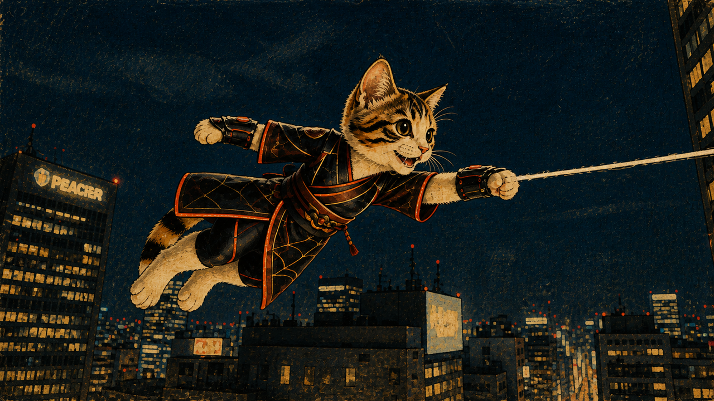
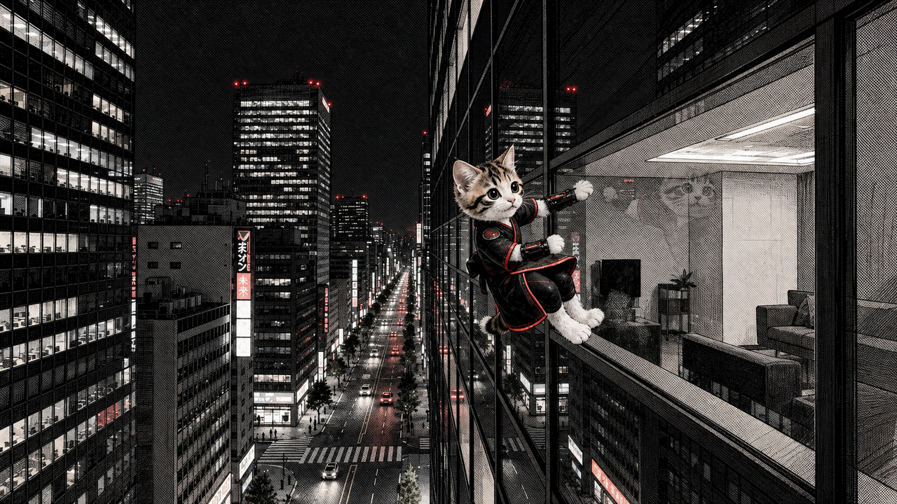

COMIC EXPRESSION
一枚ずつつないで、動きをつくる。
画風が変わると、同じミケちゃんの冒険も違って見える。

色と筆のタッチで、躍動感を。
カラーの絵画調 / 糸を出すシーン

線と陰影で、冒険を描く。
白黒のペン画調 / 壁を走るシーン
FROM FRAMES TO FILM
この絵が、動画の中で動き出す。
実際の動画に使用した連番画像です。糸を出すシーンや壁を走るシーンに、パラパラ漫画方式の演出を取り入れています。
COMIC EXPRESSION
画風が変わると、同じミケちゃんの冒険も違って見える。

カラーの絵画調 / 糸を出すシーン

白黒のペン画調 / 壁を走るシーン
実際の動画に使用した連番画像です。糸を出すシーンや壁を走るシーンに、パラパラ漫画方式の演出を取り入れています。